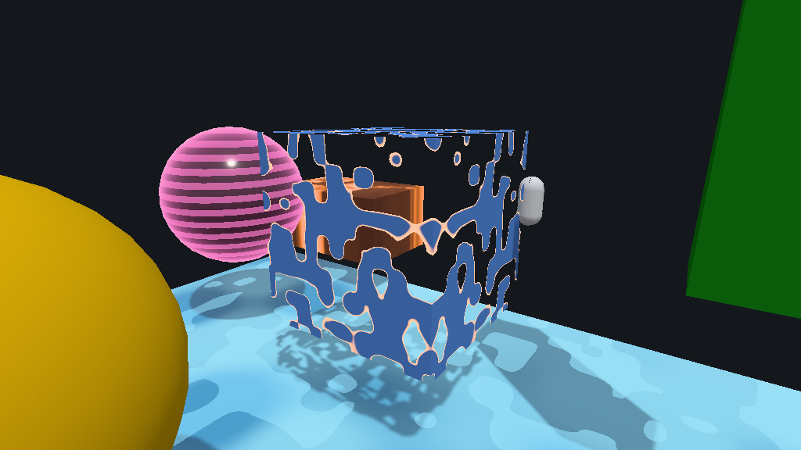
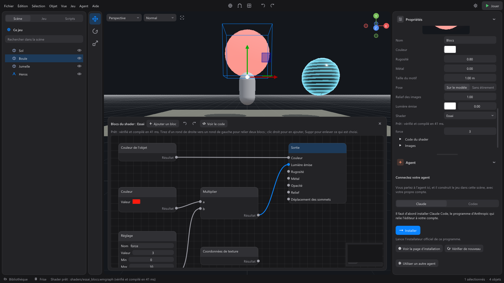
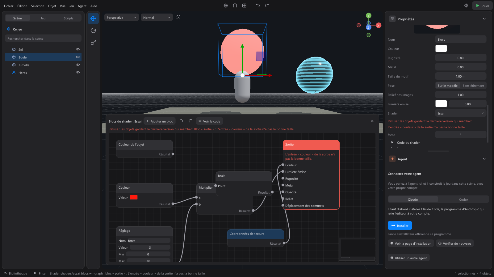

Shaders¶
A shader tells the graphics card what a surface looks like. A material sets values (color, roughness, metal, images, glow); a shader goes further: a scrolling hologram, an object that dissolves into embers, flowing lava, a glowing rim, a tree that sways in the wind, cartoon water.
A shader goes on a material: every object that uses this material shows it. It only changes the surface (color, relief, roughness, metal, emitted light, cut-out holes) and, if it wants, where the vertices are. Lighting, shadows, transparency and anti-aliasing stay with the engine: a shader cannot break them.

Using a recipe¶
Select an object that uses a project material. In the Material section, under Emitted light, the Shader list offers the project's shaders and the Recipes shipped with WorldMint:
| Recipe | What it does |
|---|---|
| Hologram | Scrolling lines and a glowing rim, on an almost black surface. |
| Dissolve | The object vanishes in patches, edged with embers; its shadow follows. |
| Wind in foliage | The top of the model sways, its foot stays in place (trees, bushes, tall grass). |
| Glowing rim | The edge of the object shines, like a magic item or one to pick up. |
| Stylized water | Opaque water with bold colors, sparkles and small waves. |
| Lava | Dark rock crossed by burning veins that flow slowly. |
| Blinking | The surface lights up and goes off, like a warning light. |
Choosing a recipe copies it into the project's shaders/ folder: it is now your shader. Its settings appear just below, as sliders (a color, a speed, a strength...). They only change this material: two materials can use the same shader with different colors. Reset the shader's settings gives each one back the value its code gives it.

Changing the code¶
A shader's code is a small text file, shaders/<name>.wmshader. Two ways to change it:
- Shader code, in the material panel: type, and the shader is checked and recompiled as soon as you stop. The view shows the result at once.
- Open the file: it opens in your text editor. Each time you save, WorldMint reads it again and recompiles it.
A shader is written in framed GLSL:
// Hologram: the first line describes the shader.
param color glow = vec3(0.2, 0.8, 1.0); // a setting: a color swatch
param float speed = 2.0 range(0, 10); // a slider, from 0 to 10
void surface(inout Surface s, Inputs i) {
float line = step(0.5, fract(i.position.y * 8.0 - i.time * speed));
s.color = glow * 0.08;
s.emission = glow * (fresnel(i.normal, i.toCamera, 3.0) + line * 0.25);
}
void vertex(inout vec3 position, VertexInputs v) { // optional: moves the vertices
position.y += 0.05 * sin(v.time * 3.0 + position.x);
}
What the shader changes (Surface s) |
What it reads (Inputs i) |
|---|---|
color: the base color, from 0 to 1 |
position: the point, in the world |
roughness: 0 smooth, 1 matte |
normal: the model's normal |
metallic: 0 or 1 |
uv: the texture coordinates |
emission: the emitted light |
time: game time, in seconds (pauses do not count) |
opacity: under 0.5, the point vanishes |
toCamera: the direction of the camera |
normal: the relief, in the world |
tint: the object's color |
Vertices read local (the vertex in the model), normal, uv and time, and move position (in the world). The library: noise (a soft noise from 0 to 1), fresnel (the edge seen from the front), quality() (0 in Low quality, 1 Medium, 2 High: a costly shader gets simpler in Low). Eight settings at most: float, vec2, vec3, vec4, or color.
Connected blocks¶
Without writing code, a shader can be built with connected blocks: each block does one simple thing (read the time, make noise, mix two colors, light up the rim), and you join them like pipes, up to the Output block, which receives what the shader changes: color, emitted light, roughness, metal, opacity, relief, and the vertex displacement. The file is shaders/<name>.wmgraph.
- Start: in the material's Shader list, choose New shader in blocks, or a recipe in blocks (each of the seven recipes exists in code and in blocks, with the same settings and the same image). Open the blocks opens the Shader blocks window over the bottom of the view: the object stays visible above it, and the material's sphere in the properties.
- Add a block: the Add a block button, or a right click on the background. Blocks are sorted by family (Inputs, Values and settings, Math, Patterns and effects, Vectors and colors), with a search; hover a block to read what it does.
- Connect: drag from the dot on the right of a block (its Result) to the dot on the left of another one (one of its inputs). Dropping a link in empty space opens the menu: the block you choose is already connected. A free input takes the small value set next to it.
- Move, delete: drag a block by its title; its place is saved in the file. Click a block or a link, then Delete. Right-drag to move the background. Ctrl+Z and Ctrl+Y undo and redo, with the mouse over the window.
- Settings: a Setting block (a number, with its name, value, minimum and maximum) or Color setting becomes a slider of the material, like a
paramin code. - Preview: each change is checked and compiled 0.3 s later, and the view shows it at once.
- Show the code shows the code the blocks give, read-only: you change it through the blocks.

A link that does not fit (a loop, two different sizes, a surface block connected to the vertex displacement) is refused: the faulty block turns red, with its message, and the object keeps the last version that worked.

When the code is refused¶
A shader is checked in three steps before it shows: the text (nothing the engine keeps for itself: no #, no resource, no while, loops of 64 turns at most), a compilation in a "sandbox" that only knows the contract above, then the compilation in the engine's real shader. If one refuses:
- the panel says why, and on which line ("line 4: writing error, on this line or at the end of the previous one"); so do the console and the status bar;
- objects keep the last version that worked, or their base material if there is none yet: nothing disappears, nothing turns pink.
After the shader, the engine replaces any value that is not finite (a division by zero) with the material's, and bounds everything else: a wrong shader never makes a black stain or breaks the image.
With the agent¶
The agent knows the recipes and the contract. Ask it "make this chest glow", "have the trees sway in the wind" or "cartoon water for the pond": it puts a recipe on the material and tunes its sliders, or writes a shader, in code or in blocks (it reads and changes the graph you see in the blocks window). It gets the same messages as you, by line, and fixes them before saying it is done. It never changes a shader from a pack: it copies it into shaders/.
Safety, exported game, performance¶
- A shader from a downloaded pack is recompiled from its text, in a separate process: a booby-trapped text cannot crash the editor.
- The exported game compiles nothing: the editor stores the compiled versions in the project, and the export takes them along. If a shader is refused, the game draws the material without it.
- Checking and compiling a shader takes 5 to 7 ms; the graphics card then prepares its pipeline (0.1 to 0.5 s the very first time, a few milliseconds afterwards), on the side: the editor does not freeze, the object keeps the previous version until the new one is ready.